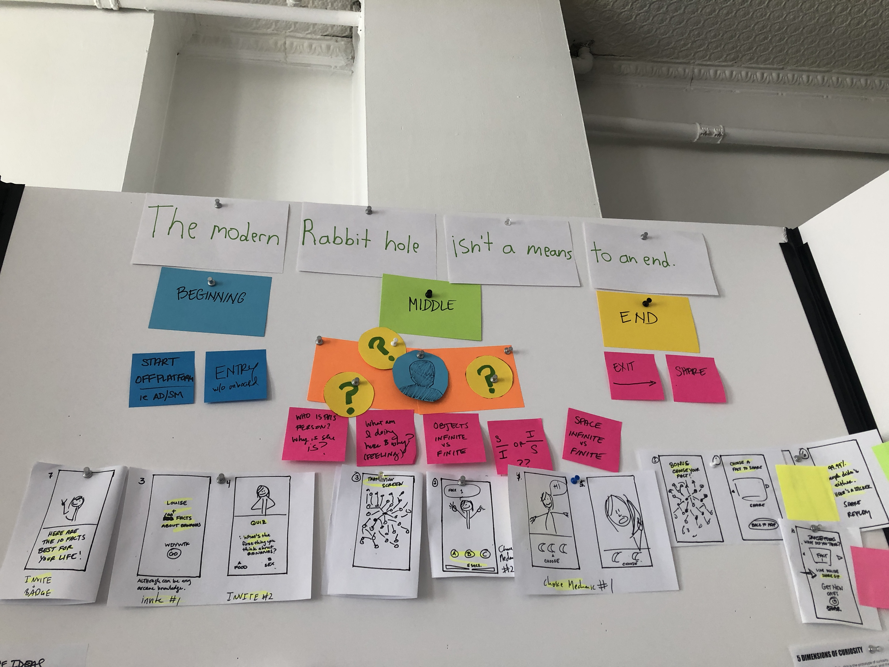
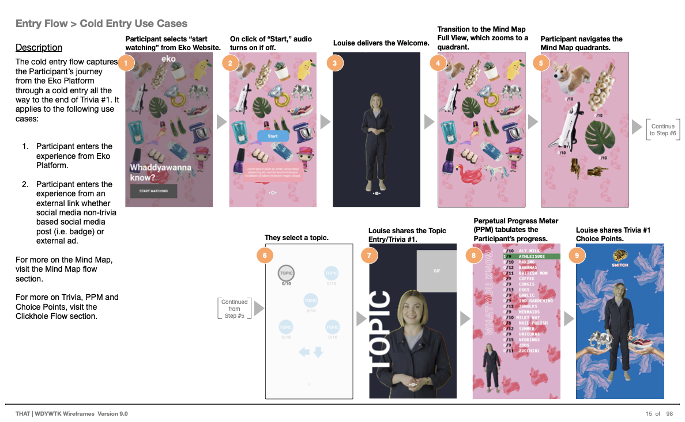

Whaddyawannaknow
Clients: Walmart, eko, Technology Humans & Taste (THAT)
In 2018, Walmart invested in a $250M strategic partnership with interactive-video pioneer eko in order to attract new shoppers through cutting-edge tech experiences. THAT pitched three shows to them.
The Challenge: How might we build a show about everything on a platform that’s never handled anything so complex? And make it fun?
What I Did
THAT went looking for a team that could pull this concept off. Just two phone interviews later, I moved to NYC to join a writer and creative director on brainstorming this into reality. Whaddyawanna know went from a show about everything to an interactive game where Louise—the smartest woman in the world—shared 200 pieces of trivia across categories as random as corgis and summer to viewers. The choose-your-own-adventure narrative made it seem like participants only had to choose between this or that—bananas or mermaids—but in reality they had over 2,000+ narrative paths to walk down. Also quizzes, levels to complete, and gifs to share. Oh yes, and everything in the show was something you could find or buy at Walmart.
In the process of getting it launch, I navigated multiple stakeholders, got buy-in from them on custom product development and user testing, facilitated my team through design-thinking exercises, built a paper prototype that unlocked the whole experience, as well as worked with a film team for the first time.
Success Stats
- Participants consistently play up to 20 facts in testing, which equaled about 5 minutes of gameplay.
- We won the 2020 CommArts Award for best interactive mobile/tablet entertainment
- Whaddyawannaknow was the only show of the original pitches that stayed true to its original concept and was launched within 8 months
- My work defined SOPs for future interactive media shows between THAT and eko.
- THAT invited me to manage the upcoming build and launch of their next project KidHQ and then to build a roadmap/MVP for their AI venture DumDum.
Expertise
- Product & Experience Strategy
- UX Research & Design
- Content Strategy & Info Architecture
Concept → Launch
The virtual rabbit hole started with a lot of scribbles. I eventually evolved it into a working paper prototype that unlocked the whole puzzle for the team—from clients to designers. In playing through the prototype, we accounted for every edge case.

I insisted on running several guerrilla user tests at the Canal Street marketplace in NYC and virtually with our key customer segment. The data we collected was so helpful, that THAT was able pitch more focus group testing to eko for this and the other shows.
“It’s actually really cool, you can get caught in this.”
Marti, 28, promotions
“I don’t think I would leave the experience, I would have kept clicking, just to see what else is there.”
Edmund
“Counting is cool, I could see myself wanting to get to 10 facts, because I kinda like the trivia stuff, so I want to bring it to a nice even number and keep going.”
Rachel & Anjeannette, 20-somethings
The final flow was 30 feet long in PDF format. But here’s a close-up of how film and interactive design meet.

Over 2 hours of gameplan compressed into a case study!
Press
“This is one of my favorite pieces this year. It feels like a video version of Wikipedia.”
Phillip Tiongson · CommArts Juror